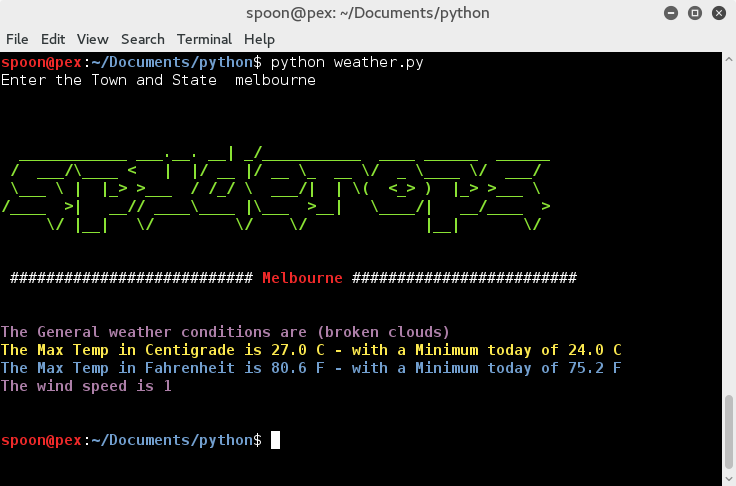

Create a Weather Application Using Python

This turns out to be a lot of fun, I enjoyed using python and there are numerous ways to output the weather data, just head on over to www.openweathermap.org.
The screenshot below is the applicaiton running, you just type python weather.py and the application asks you which town and state. I just put in the Town below which is good enough to get the idea. Your milage may vary depending on how much skill you have because you need to install pywom the python import needed to parse openweathermap data.

And here's the code.
#
# File: weather.py
#
# Desc: This file pulls data from Open Weather Map
# and parses the data nicely with color.
#
# Usage: python weather.py
#
# Version: 1.0
#
# Date: 23 DEC 2018
#
# TODO : Test the input of 'raw_input' and work out why it throws an error when input is both
# a Town and a State. So far it works just fine with 'Town'.
# Todo Truly Amazing Things:)
# pip install pyowm
import pyowm
# constants
YELLOW = ('\033[1;33m')
RED = ('\033[1;31m')
MAGENTA = ('\033[1;35m')
BLUE = ('\033[1;34m')
GREEN = ('\033[1;32m')
END = ('\033[1;m')
# you need to sign up for your onw API key
owm = pyowm.OWM('you need to put your own API key in here')
town = raw_input("Enter the Town and State ")
obs = owm.weather_at_place(town)
w = obs.get_weather()
wind = w.get_wind()
speed = wind['speed']
tempc = w.get_temperature('celsius')
tempf = w.get_temperature('fahrenheit')
maxc = tempc[‘temp_max’] minc = tempc[‘temp_min’]
maxf = tempf[‘temp_max’] minf = tempf[‘temp_min’]
tomorrow = pyowm.timeutils.tomorrow()
city = obs.get_location()
stat = w.get_detailed_status()
#print (w)
#print (wind)
#print (temp)
#print (tomorrow)
#print (city.get_name())
print (“\n”)
#
# you can get your own ASCII art here
# http://patorjk.com/software/taag/#p=display&f=Graffiti&t=Type%20Something
#
print GREEN + ” ”
YOUR ASCII ART GOES HERE
print (“\n”)
print ” ########################### \033[1;31m{0}\033[1;m #########################”.format(city.get_name())
print (“\n”)
print (MAGENTA + “The General weather conditions are ({0})”.format(stat))
print (YELLOW + “The Max Temp in Centigrade is {0} C – with a Minimum today of {1} C”.format(maxc, minc)) + END
print (BLUE + “The Max Temp in Fahrenheit is {0} F – with a Minimum today of {1} F”.format(maxf, minf)) + END
print (MAGENTA + “The wind speed is {0}”.format(speed)) + END
print (“\n”)
# ——————————- EOF ——————————- #